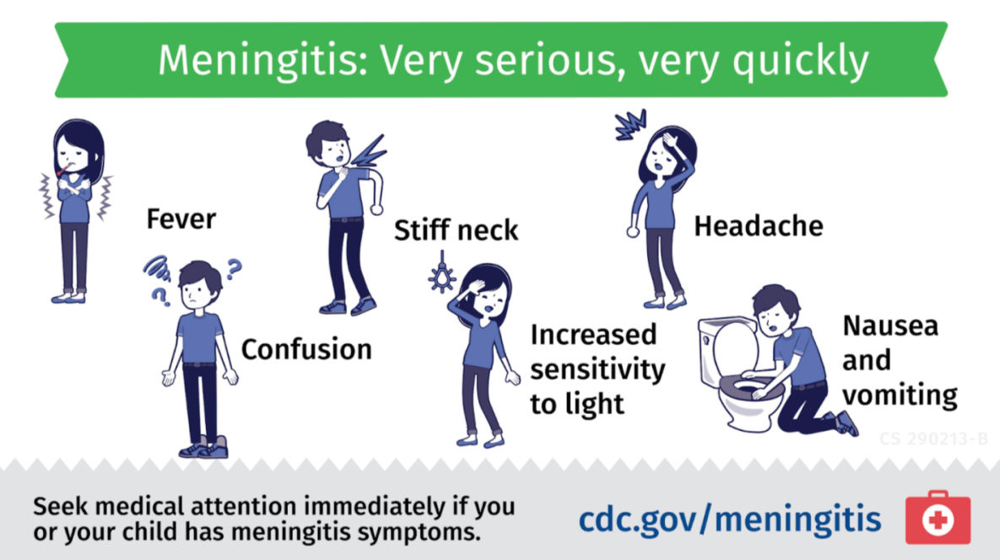

“Acordou com dor” e “acordou por causa da dor” não são a mesma frase no enunciado.
P06E8despertarsistêmicos
Dor que desperta
Dor que acorda o paciente é sinal de alarme.
“Com” ≠ “por causa”
No enunciado, “o paciente acordou por causa da dor” não é o mesmo que “acordou com dor”: o alarme é a dor tão forte que despertou o sono.
Pares sistêmicos
Cefaleia associada a sinais sistêmicos — ex.: febre e rigidez de nuca — levanta a hipótese de meningite. Febre + perda ponderal levanta suspeita de processo inflamatório/sistêmico a investigar.

Imagem real CDC — febre e rigidez de nuca, sobretudo com cefaleia ou confusão, compõem o alerta clínico para meningite. O pareamento “febre + nuca” fica visível de uma vez.
Centers for Disease Control and Prevention (U.S.), David J. Sencer CDC Museum. “Meningitis: Very serious, very quickly”. Teen Newsletter: Meningitis, jan. 2023. Domínio público. Fonte: https://stacks.cdc.gov/view/cdc/123594. Material disponível gratuitamente no CDC; a reutilização não implica endosso do CDC, HHS ou Governo dos Estados Unidos.
Ilustração “Acordou com dor” × “acordou por causa da dor” + pares sistêmicos. Toque nos cenários para comparar.
Quiz — fixação
Qual frase do enunciado carrega o alarme de despertar?
Gabarito B. o alarme é a dor que quebra o sono, não a presença de dor ao acordar.
(A) ambígua e não equivalente ao despertar pela dor. (C)(D) não descrevem despertar. Cai na A por leitura superficial de “acordou” + “dor”.
Febre + rigidez de nuca + cefaleia orienta primeiro para:
Gabarito B. o par febre + nuca é um marcador de síndrome meníngea.
(A)(C) primárias sem esse par. (D) falta o eixo meníngeo. Cai por febre isolada virar “virose” sem olhar a nuca.